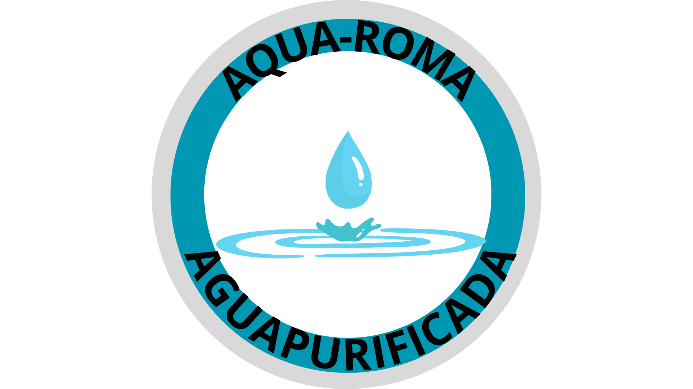

Inicio
Procedimiento del servicio
Catálogo
Formulario de ventas

Formulario de Ventas - Purificador de Agua
Formulario de Ventas - Purificador de Agua
Nombre:
Teléfono:
Email:
Seleccionar Producto:
Garrafon20L
Pack 24 Botellas 400ML
Botella 600ML
Botella 1L
Cantidad: